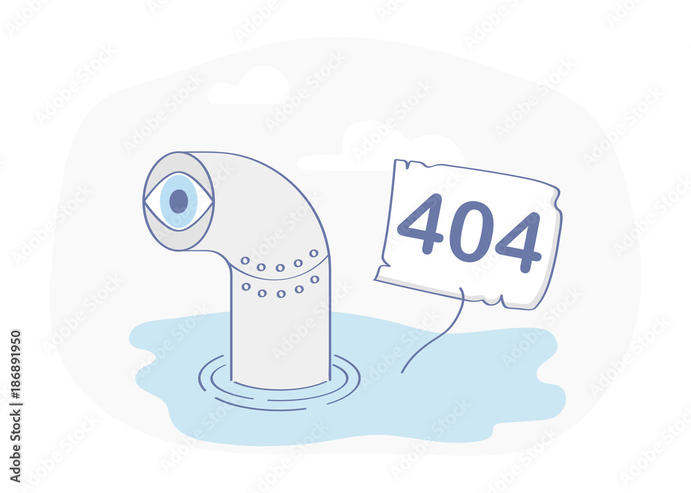
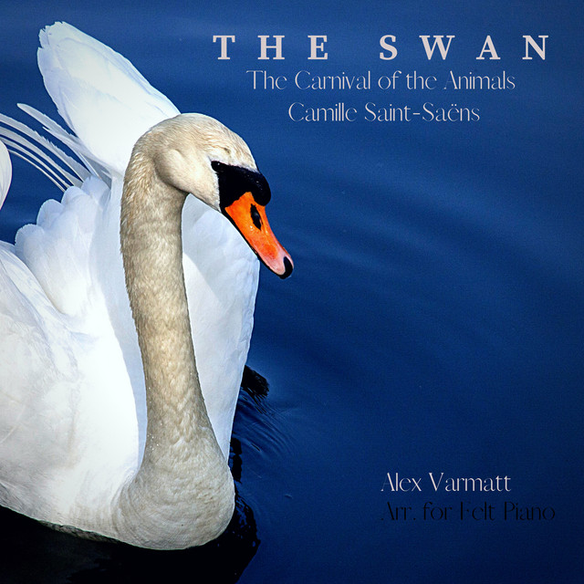
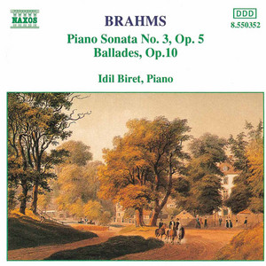
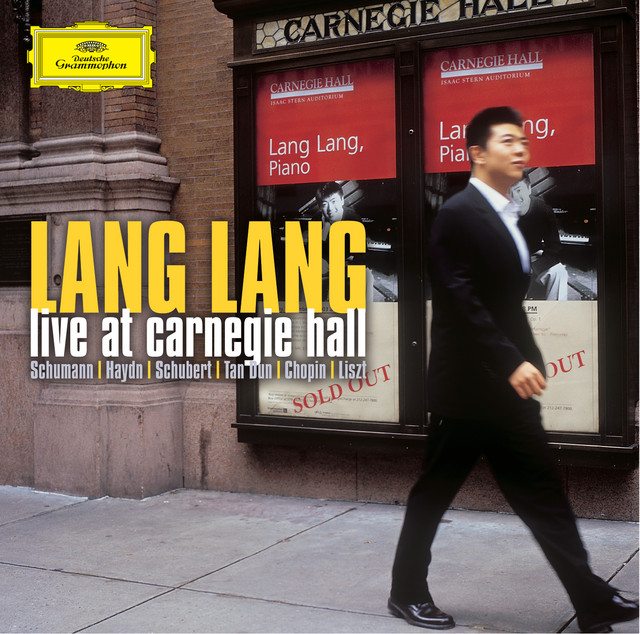
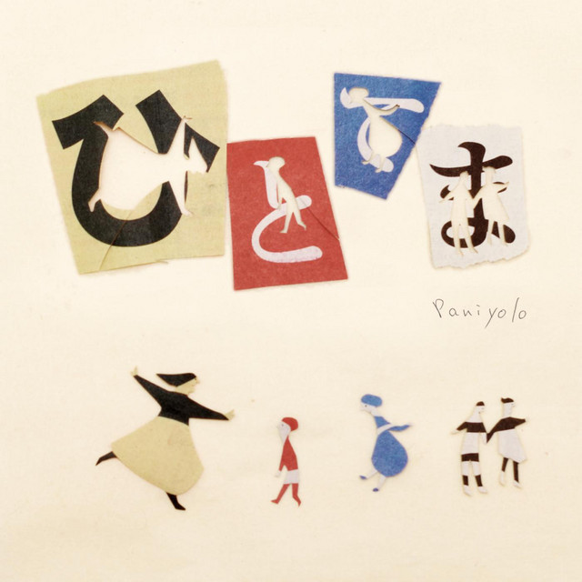

Song Name: Cello Sonata in G Minor, Op. 65: III.Largo
Artist: Frédéric Chopin
Music Video:(Click on the image to get youtube link)
Ablum: (Click on the image to get the Spotify link)

Song Name: Carnival of the Animals: The Swan
Artist: Camille Saint-Saens
Music Video:(Click on the image to get youtube link)
Ablum: (Click on the image to get the Spotify link)
Song Name: Sonata in F Minor, L 118: Andante moderato
Artist: Domenico Scarlatti
Music Video: (Click on the image to get youtube link)
Ablum: (Click on the image to get spotify link)
Song Name: Eight Memories In Watercolour, Op.1:4.Blue Nun - live
Artist: Tan Dun
Music Video:(Click on the image to get youtube link)
Ablum: (Click on the image to get the Spotify link)
Song Name: Irodori
Artist: Paniyolo
Music Video:(Click on the image to get youtube link)
Ablum: (Click on the image to get the Spotify link)
